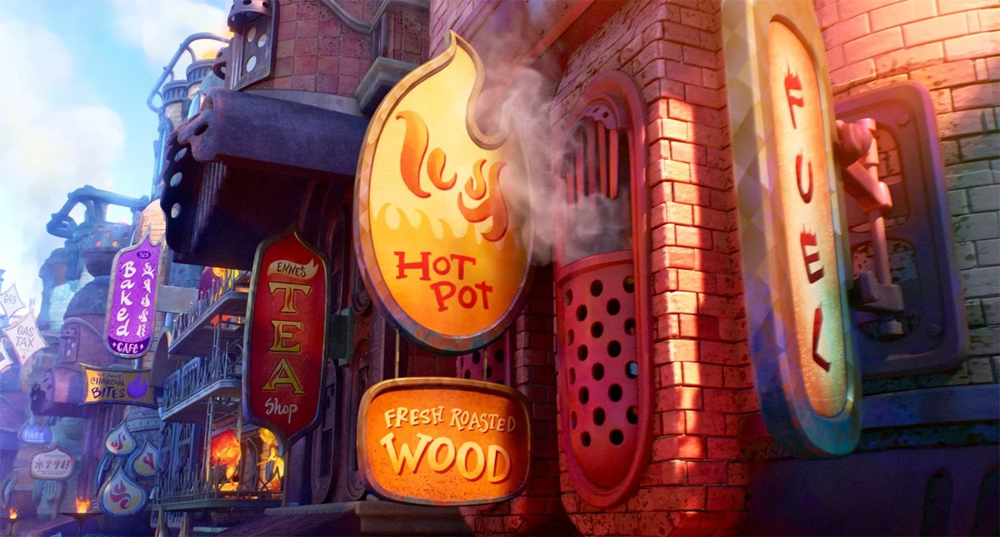
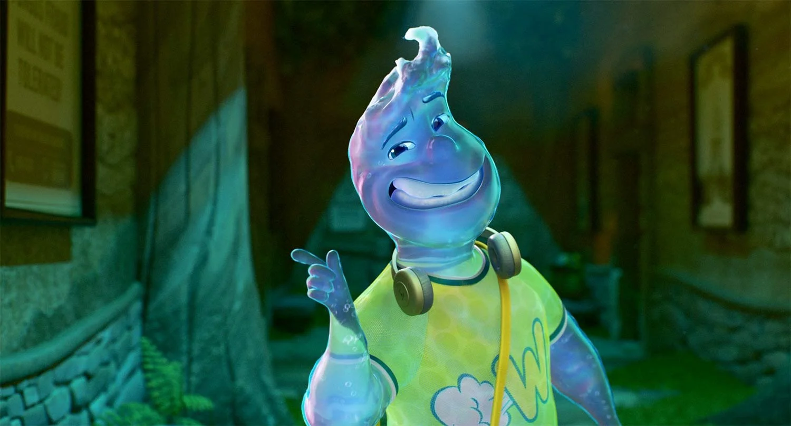
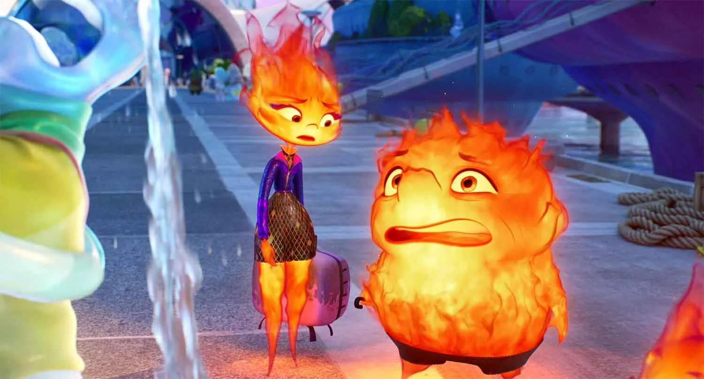
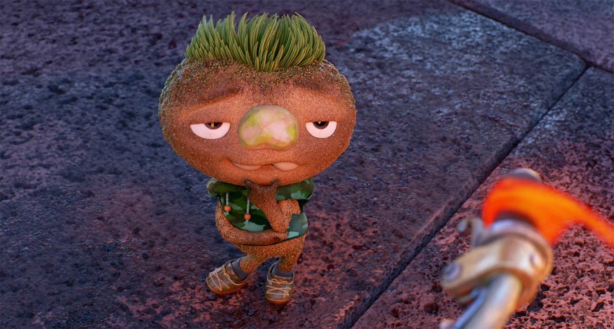
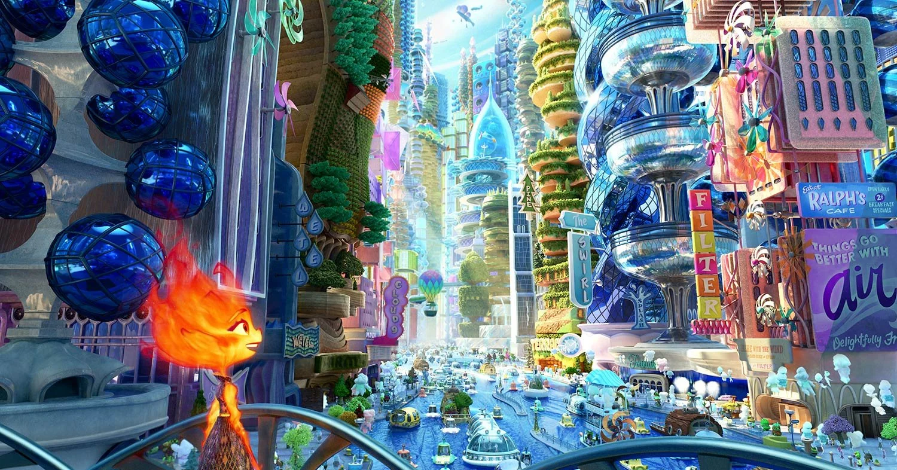
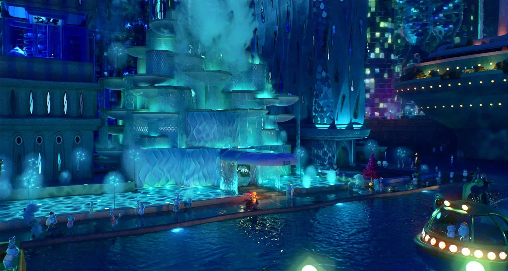
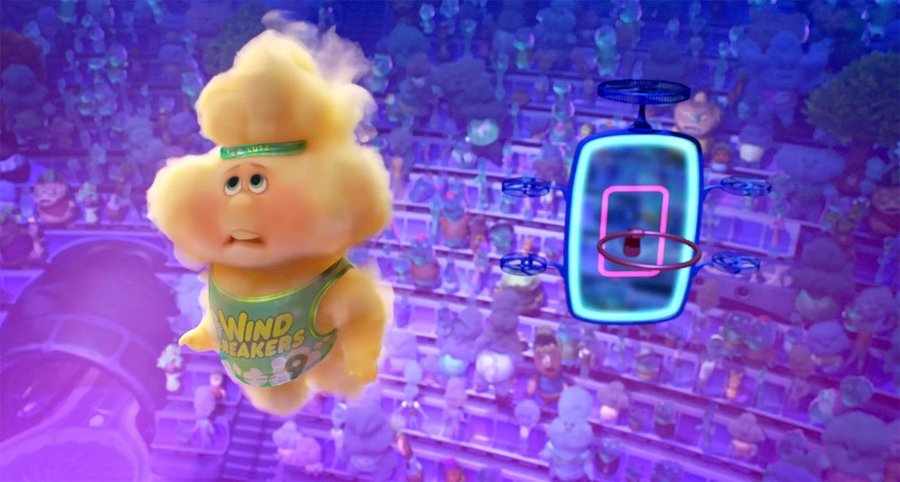

Эмбер
Решительная, талантливая и горячая. Учится отличать свои мечты от чужих ожиданий.
Разные стихии.
Одно притяжение.
Добро пожаловать в город, где можно вспыхнуть от чувств и буквально растаять от любви.

Эмбер помогает родителям в семейном магазине. Уэйд привык плыть по течению и не скрывать своих чувств. Их встреча меняет привычные правила.
За ярким городом скрывается очень человеческая история о семье, ожиданиях и смелости выбрать собственный путь.
Выбери стихию: изменятся акценты сайта и страница нашего атласа.

Тёплые оттенки, семейные магазины и свет, который хочется унести с собой. Для Эмбер этот квартал — дом.
Атлас — авторская прогулка по миру фильма.
Немного вспыльчивые. Очень чувствительные. Совсем не одинаковые.
Решительная, талантливая и горячая. Учится отличать свои мечты от чужих ожиданий.

ВодаНе стесняется слёз и всегда замечает хорошее. Даже в тех, кто с ним не согласен.

ОгоньОтец Эмбер, гордый хозяин магазина и хранитель семейных традиций.

ЗемляОбаятельный юный сосед. У него нежное сердце и запас неловких комплиментов.
Город, герои и поиски художников. Каждый кадр можно открыть крупно.
Показано изображений: 8





Одного правильного ответа достаточно, чтобы начать знакомство со стихиями.
Подсказка прячется среди жителей города.
Пожалуй, главный закон этого города.